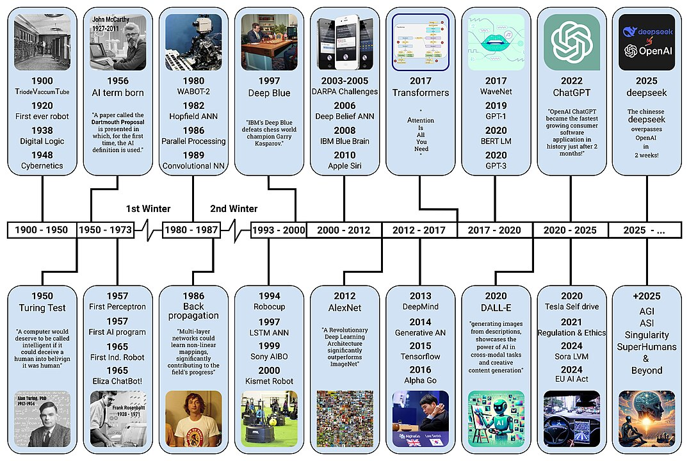
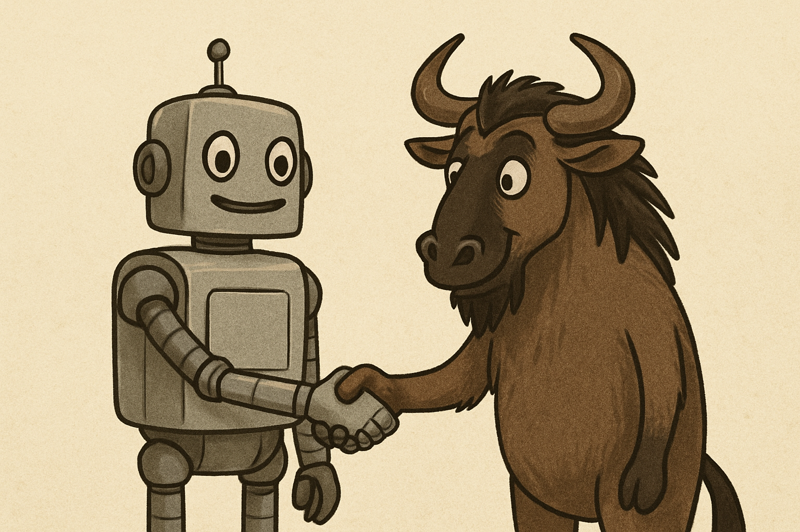

Integración de Inteligencia Artificial con Software Libre
Inteligencia Artificial y Software Libre
Generated with GPT-4o
¿Qué es la IA?

Por Tarjomyar - Trabajo propio, CC BY-SA 4.0,
https://commons.wikimedia.org/w/index.php?curid=158857968
¿Qué es la IA?
- Sistemas que piensan como humanos (Ciencia cognoscitiva)
- Sistemas que piensan racionalmente (Lógica)
- Sistemas que actúan como humanos (Turing)
- Sistemas que actúan racionalmente (Agentes)
La IA...
- Se puede equivocar
- Puede estar sesgada (creador/usuario)
- Impacto económico/social
Generated with Gemini 2.0 Flash
¿Qué es el SL?
-
Conjunto de programas
- Libertad de usar, estudiar y modificar
- Distribución libre
- Acceso al código fuente
Generated with GPT-4o
¿Por qué es importante su integración?
- La IA está transformando el mundo
- El software libre democratiza su acceso y desarrollo
Beneficios del SL en IA

Generated with GPT-4o
Transparencia y Auditoría
- Inspeccionar los algoritmos y modelos utilizados
- Identificar sesgos y errores
- Mejorar la confianza en los sistemas de IA
-
Fundamental en sectores críticos:
- Salud
- Finanzas
- Educación
- Seguridad
Accesibilidad y Soberanía Tecnológica
-
Reduce la dependencia de grandes corporaciones y APIs cerradas.
-
Países, comunidades y universidades pueden crear sus propios
sistemas inteligentes
- Desarrollo y aplicación de IA mas justa y equitativa
Colaboración y Comunidad
-
Fomenta la colaboración entre desarrolladores, investigadores y
usuarios.
-
Contribuciones de la comunidad para mejorar modelos y
algoritmos.
-
Desarrollo de herramientas y librerías específicas para IA
- Promueve la liberación de datos: Compartir datasets.
Personalización y Adaptación
-
Adaptar los modelos a contextos locales: idioma, cultura, datos
propios
- Competencia mas justa entre pequeñas y grandes empresas
-
Creación de soluciones específicas para pymes y micro empresas
- Creación de modelos de IA para grupos minoritarios
Innovación
-
Aceleración del desarrollo social y económico a nivel global
- Creación de nuevos modelos sobre modelos pre-existentes
- Aplicaciones en sectores emergentes
- Uso sostenible de la IA
Herramientas de IA Libres
- Machine Learning/Deep Learning
- Visión Computacional
- NLP
- IoT y Robótica (Agentes)
- Anonimación y Privacidad en IA
- Orquestación y automatización
Generated with GPT-4o
Desarrollo de IA Libre
- Python
- R
- Julia
- JavaScript
- C++
Generated with GPT-4o
Machine Learning
- PyTorch (Meta/Fb)
- TensorFlow (Google)
- Scikit-learn
- MLflow
- Apache Spark MLlib
- Kubeflow
Generated with GPT-4o
Machine Learning
- Diagnóstico médico asistido
- Predicción de precios (mercado inmobiliario, acciones)
- Detección de fraudes financieros
Visión Computacional
- OpenCV
- SimpleCV
- Darknet (YOLO)
- TensorFlow Object Detection API
Visión Computacional
- Reconocimiento facial
- Detección de objetos
- Reconocimiento de texto (OCR)
- Clasificación de imágenes
Procesamiento de Lenguaje Natural
- NLTK
- Transformers (Hugging Face)
- OpenNLP
- spaCy
Procesamiento de Lenguaje Natural
- Chatbots
- Traducción automática (LibreTranslate)
- Clasificación de texto
- Generación de texto
- Análisis de sentimientos
Robótica
- ROS (Robot Operating System)
- OpenAI Gym
- Gazebo
- PyBullet
Robótica
- Drones autónomos
- Simulación de robots
- Control de robots
- Aprendizaje por refuerzo
- Aplicaciones industriales
Anonimización y Privacidad
- OpenMined
- PySyft
- TensorFlow Privacy
- Federated Learning
Anonimización y Privacidad
- Privacidad diferencial
- Aprendizaje federado
- Anonimización de datos
- Privacidad en el entrenamiento de modelos
Orquestación y Automatización
- n8n
- Apache Airflow
- Luigi
- Prefect
- Dagster
Desafíos en la Integración
- Requiere alto poder computacional
- Curva de aprendizaje técnica
- Escalabilidad
- Consideraciones éticas
Alto poder computacional
- Modelos Pre-entrenados (Hugging Face)
- Servicios de computación libre (Google Colab)
-
Técnicas de entrenamiento eficiente como transfer learning o
quantization.
Curva de aprendizaje técnica
- Documentación local
- Talleres comunitarios (FLISOL!)
-
Usar herramientas de bajo código (como n8n, Rasa) para empezar y
luego profundizar.
Escalabilidad y Despliegue
- Uso de contenedores (Docker)
- Orquestación de contenedores (Kubernetes)
- Uso de servicios en la nube (OpenStack)
-
Empezar pequeño: "Primero validar el modelo en un entorno
controlado"
Consideraciones éticas y sesgos
- Datasets con sesgos raciales, culturales o de género
- Auditar los datasets antes de entrenar
-
Usar modelos libres que explicitan método de recolección de
datos
- Diversidad en el equipo de desarrollo y testing
Futuro y Tendencias
- IA explicable (XAI)
- Aprendizaje federado abierto
- Modelos accesibles y auditables
- Desarrollo ético colaborativo
IA explicable (XAI)
- Modelos que explican sus decisiones
- Mejorar la confianza y comprensión de los usuarios
- Herramientas como LIME y SHAP
Aprendizaje Federado Libre
-
Entrenamiento usando datos distribuidos sin centralizarlos
- Privacidad y seguridad de los datos
- PySyft, TensorFlow Federated
Modelos accesibles y auditables
- Modelos pre-entrenados disponibles públicamente
- Mistral, Falcon, LLaMA2 Community Edition, Whisper
Desarrollo ético colaborativo
- Iniciativas de IA responsable
- Colaboración entre comunidades y organizaciones
- Proyectos de código abierto que promueven la ética en IA
Conclusión
El software libre potencia una IA accesible, ética y colaborativa.
¡Tú también puedes contribuir!
Preguntas/Debate
¿Qué herramientas libres usas tú?
¿Qué desafíos has enfrentado
con IA libre?